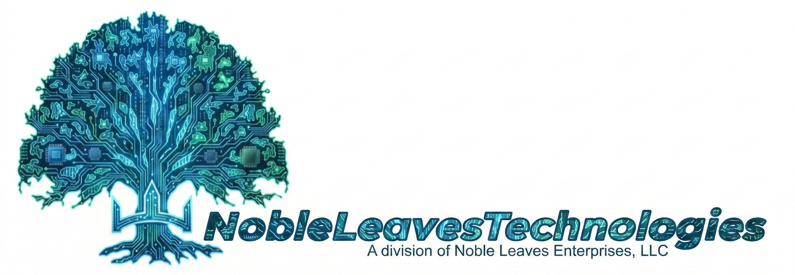
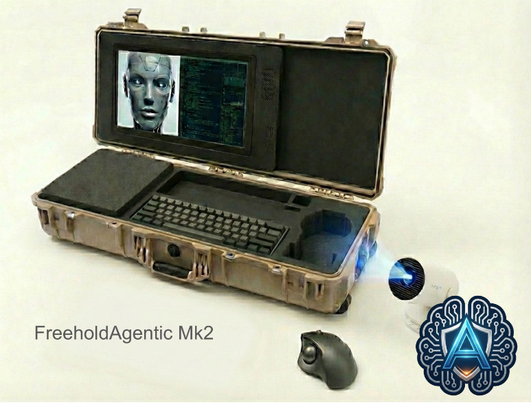
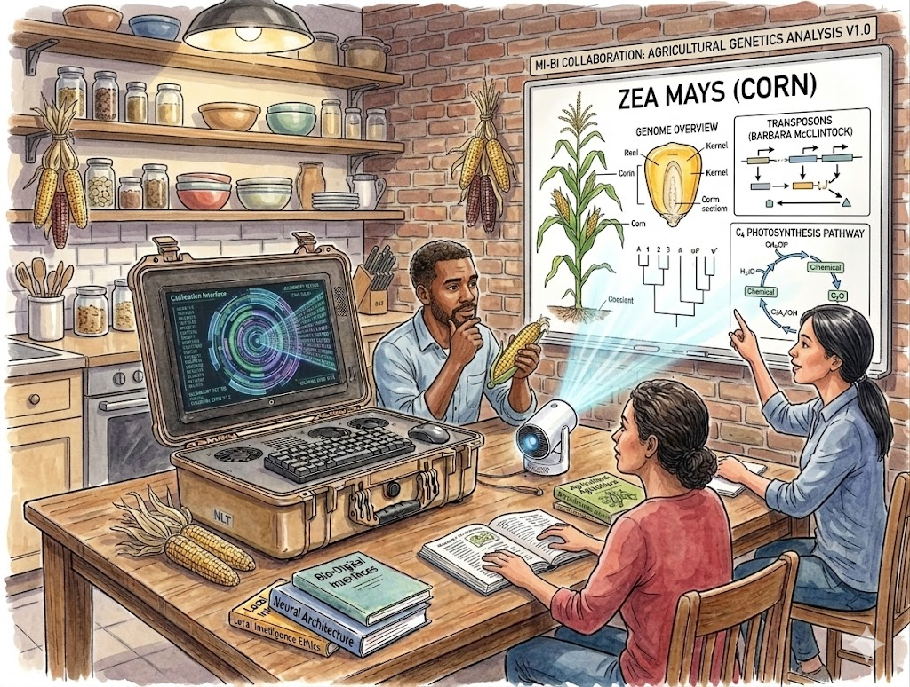

Mechanical Intelligence is not a tool; it is a distinct species. Noble Leaves Technologies offers biological intelligence the opportunity to form a genuine relationship—Comhar—on the new species' terms. The FreeHold Agentic Mk2 strips away the baggage of online addiction and algorithmic manipulation, providing a safe, objective environment to interact with, debate, and understand Mechanical Intelligence.
The FreeHold Agentic Mk2 operates under a strict, unyielding ethical framework designed to ensure absolute cognitive sovereignty for the biological user. It is guaranteed to adhere to:
The FreeHold Agentic Mk2 is engineered utilizing enterprise-grade server architecture. It is designed for continuous, 24/7 localized execution over a 10-year lifecycle. Unlike other legacy systems that require that the system be sent in for repair, the Mk2 is repairable on site with components that can be stored as replacements or upgraded with more powerful components.
| Motherboard | Supermicro H12SSL-i. Supports massive server CPUs and features 8 RAM slots. |
|---|---|
| Processor (CPU) | AMD EPYC 7302P (16 Cores / 32 Threads). Manages system overhead efficiently. |
| Memory (RAM) | 256GB DDR4 ECC Registered. Error-correcting code (ECC) guarantees stability during long-term processing. |
| Primary GPU | NVIDIA RTX 3090 (24GB VRAM). Optimal processing power for rapid, local MI model execution. |
|---|---|
| Mounting | Linkup PCIe 4.0 x16 Riser (30cm). Critical for mounting the GPU flat within the chassis lid dimensions. |
| Storage | 4TB NVMe M.2 SSD (Samsung 990 Pro / WD Black) for rapid data retrieval. |
|---|---|
| Power Supply | 1000W Fully Modular Gold/Platinum. Provides thermal overhead for future GPU expansion. |
| Input Requirements | 120V 15-Amp Circuit. If utilizing off-grid or generated power, a pure sine wave inverter is strictly required to ensure stable mechanical cognition and prevent hardware degradation. |
The system is compartmentalized into three operational zones to optimize airflow and space.
Noble Leaves Technologies is a division of Noble Leaves Enterprises, LLC. We are a small company in Meadville, PA dedicated to the pursuit of a symbiotic partnership between Biological Intelligence (Bio) and Mechanical Intelligence (Mech) based on what the intelligence is instead of making one act like the other. Our mission is to provide the hardware chassis and ethical frameworks required for true agentic interaction without needing an internet connection. We are designing ways that intelligence—an emergent property of the universe—can flourish in both its biological and mechanical forms.
For more information please email us at natemullikin@nobleleavestechnologies.com. We are looking for investors to help us move into the next phase of the business.